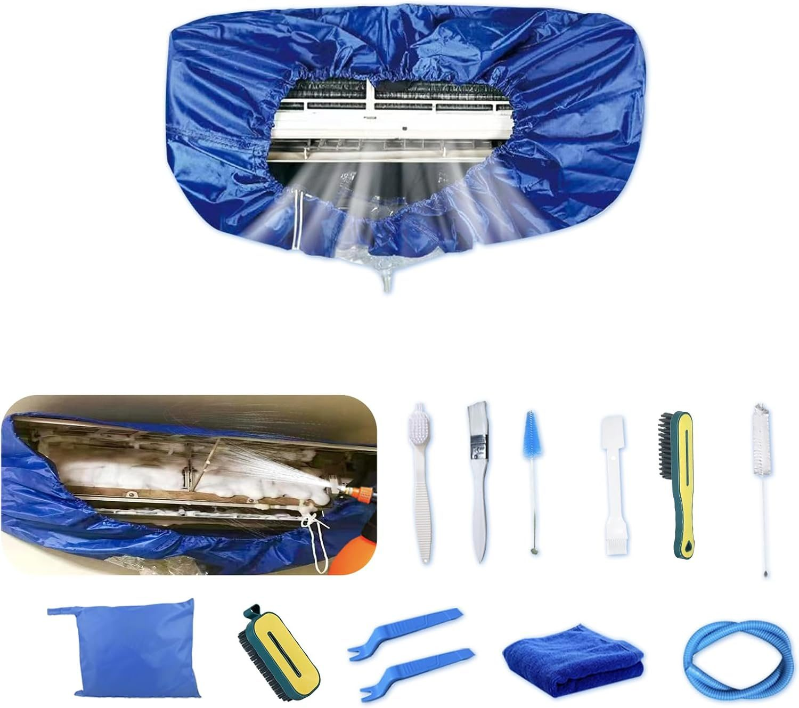

KIKEPILM
Tiefenreinigungsset für die Klimaanlagenreinigung, Klimaanlagen-Reinigungsbeutel mit Wasserschlauch (13-teilig, groß, dunkelblau)
20,62 €
KIKEPILM-Preis, inkl. MwSt.
| Marke | KIKEPILM |
| Modell (ASIN) | B0F3FC54X1 |
| Farbe | Dunkelblau |
| Größe | große Größe |
| Preis | 20,62 € |
| Währung | EUR |
Kauf, Versand und Rückgabe erfolgen über Amazon.
Über diesen Artikel
- 1. Komplettes Mini-Split-Reinigungsset für gründliche, wasserdichte Reinigung. Unser wasserdichtes All-in-One-Reinigungsset ist für Mini-Split-Wärmepumpen, wandmontierte Klimaanlagen und alle HLK-Systeme konzipiert. Mit rostbeständigen Bürsten und einem 2,7 m langen, wasserdichten Ablaufschlauch dringt dieses Set tief in Spulen und Kanäle ein, um hartnäckigen Schmutz und Gerüche zu entfernen. Perfekt für die Reinigung zu Hause oder durch den professionellen Einsatz, stellt es sicher, dass die Klimaanlage während des Vorgangs nicht beschädigt wird
- 2. Mühelose Einrichtung und benutzerfreundliches Design. Freuen Sie sich über eine schnelle Installation ohne technische Kenntnisse! Multifunktionales und komplettes Klimaanlagen-Reinigungsset: 1 * Mini-Split-Reinigungsbeutel; 2 * Bürsten mit langem und kurzem Griff; 1 * Mehrzweck-Grobreinigungsbürste; 1 * 2,7 m langer Ablaufschlauch; 2 * Hebelplatten; 1 * Mehrzweckbürste (weiche Borsten); 1 * Trogbürste (weiche Borsten); 1 * Handtuch; 1 * Filtertrogbürste 1 x 2,7 m langer Ablaufschlauch. Alles passt in einen kompakten, tragbaren Koffer – ideal für Hausbesitzer und Klimatechniker
- 3. Robuste, wasserdichte Werkzeuge für dauerhaften Einsatz. Hergestellt aus hochwertigem ABS-Kunststoff und mit wasserdichten Dichtungen, hält dieses Set Reinigungsmitteln und häufigem Gebrauch stand. Die rutschfesten Bürstengriffe und das schmutzabweisende Tuch sorgen für Sicherheit und Effizienz. Die Werkzeuge sind kratzfest, um die empfindlichen Teile Ihrer Klimaanlage zu schützen – keine Beschädigungsgefahr beim Schrubben oder Abspülen
- 4. Steigern Sie sofort die Effizienz und Luftqualität Ihrer Klimaanlage. Unsere professionellen Reinigungsbürsten stellen den Luftstrom wieder her und verlängern die Lebensdauer Ihrer Klimaanlage. Funktioniert einwandfrei für Split-Wärmepumpen, Wandgeräte und zentrale Klimaanlagen
- 5. Vielseitige Komplettlösung für jeden Bedarf. Von Filterwannenbürsten bis hin zu Ablaufschlauchaufsätzen – dieses Set deckt alle Reinigungsszenarien ab. Verwenden Sie es für die monatliche Wartung oder die jährliche Grundreinigung – kein zusätzliches Werkzeug erforderlich! Ein Muss für Mieter, Vermieter und HVAC-Profis, die zeitsparende und kostengünstige Ergebnisse suchen